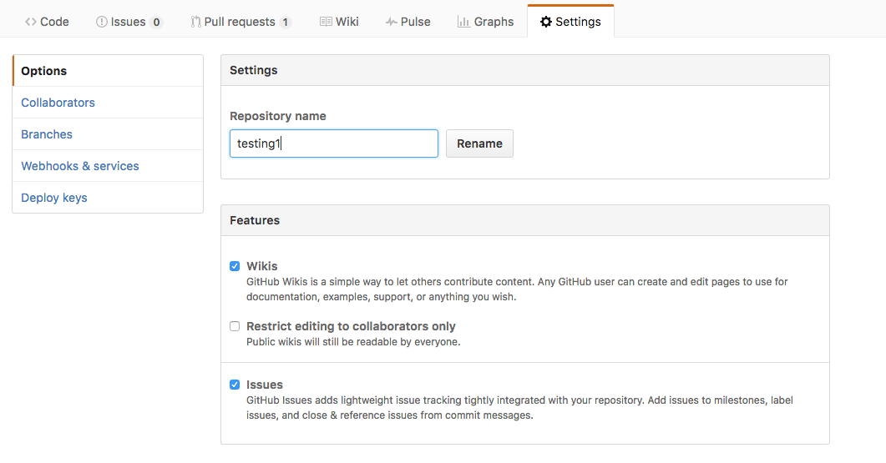
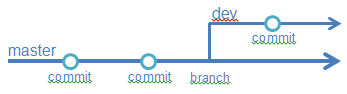
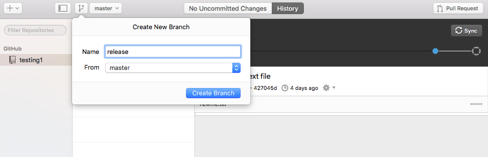
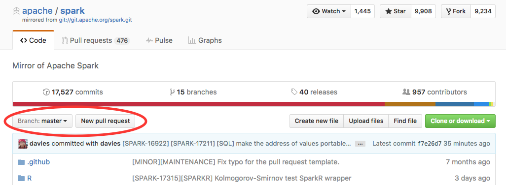
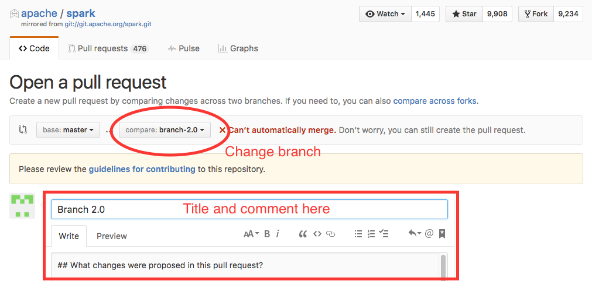

Version control really comes into its own when we begin to collaborate with other people. There are two different ways to collaborate. The first is to name a collaborator, which is mainly used in small groups of 2-3. Repositories with named collaborators will be given the power to push and pull from your repo freely, so this is a faster, but not scalable model.
For the next step, get into pairs. Pick one of your repositories on Github to use for collaboration.
Practicing by yourself
If you’re working through this lesson on your own, you can carry on by opening a second terminal window, and switching to another directory (e.g.
/tmp). This window will represent your partner, working on another computer. You won’t need to give anyone access on Github, because both ‘partners’ are you.
The partner whose repository is being used needs to give the other person access. On the Github repository you’re collaborating on, click the settings button on the right, then select Collaborators, and enter your partner’s username.
The other partner should then clone this repository to their own local computer.
Once a copy of the repository is on your computer (local), the Github website (remote), and your collaborator’s computer (remote), then you can follow the workflow below:
There’s nothing inherently wrong with this workflow – Git will be perfectly happy to facilitate this – but ultimately it’s not very efficient. Making edits one at a time isn’t much better than emailing files back and forth, and you need to be careful about coordination to avoid stepping on each other’s toes. One of Git’s key advantages is it’s recognition that such tight coupling between team members working on a shared codebase is largely unnecessary, and it therefore makes it easy to do work in parallel.
Instead of having everyone working on exactly the same copy of the repository, you can create separate copies of the project whenever you’d like. Imagine creating a safe parallel universe to play around and work on new features in. These are called “branches”, and each person can develop on their own.
To create a branch in the Windows GUI, click the dropdown menu that says ‘master’ (master is the name of the default branch for all Git repositories). On the Mac GUI, there will be a separate button directly to the left of the ‘master’ dropdown to create a new branch.
Now everyone can work as much as they like on their own branches, and then when they’re ready to show their work they can “merge” the branches back into the main branch (usually the master branch or a branch named ‘develop’, ‘release’, or similar). You can merge a branch either inside the GUI or through a Pull Request on GitHub. Merging locally can be very convenient, but issuing a Pull Request is really nice because it provides transparency – everyone on the project has a chance to review and comment on your work, before it gets merged into the main branch.
Once you’re ready to merge your branch, you can issue a Pull Request from GitHub. Go to your repository’s page and click the Pull Request button:
Next, you’ll be taken to a page to prepare the Pull Request. You can choose what branch you want to merge in by clicking the Edit button near the top of the page. The branch to merge is the ‘compare’ branch, while the branch you want to add your new work to is called the ‘base’ branch. There are places to put an informative title and comment for your Pull Request, as well as information about exactly what’s been changed:
Note that Github has already compared the branches and is telling you that they can’t be automatically merged. This means that there are conflicts between the two branches. In the ideal situation GitHub knows how to merge your two branches and can do that heavy lifting for you. We’ll talk about how to handle conflicts later in this course, but the general rule is to avoid them as often as possible by each working on your own wholly separate components of the project.
Once you’ve issued the Pull Request, it shows up in GitHub for review. Collaborators can view the request, grab the code for themselves to check out, and add comments. If something’s wrong, just adding more commits to the branch you want to merge will automagically update the Pull Request.